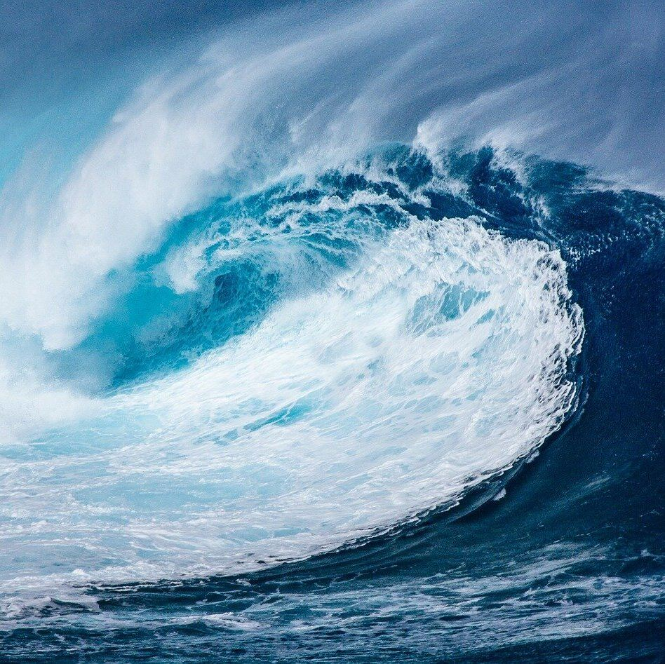
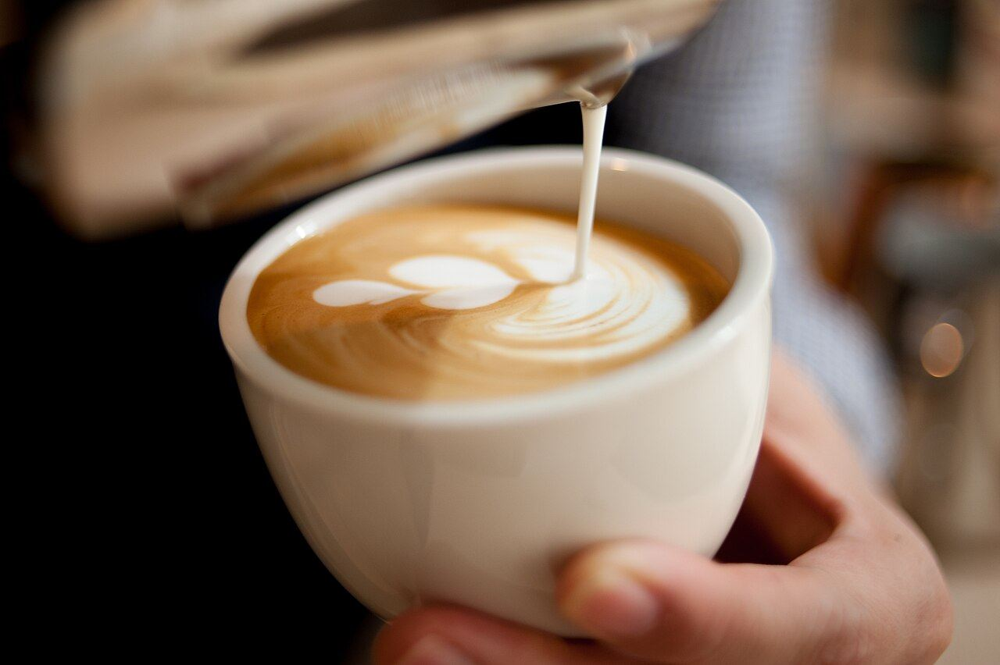
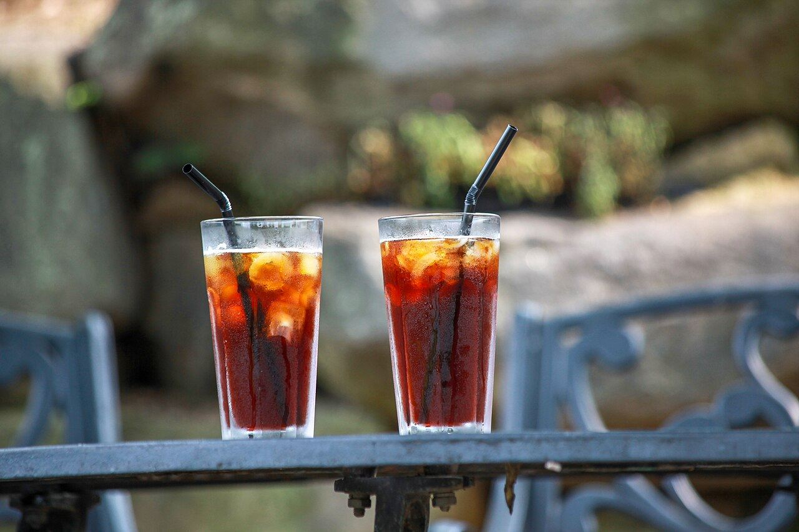
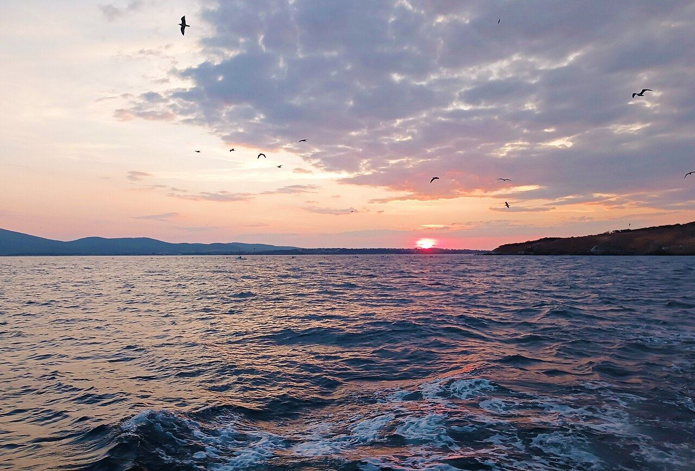
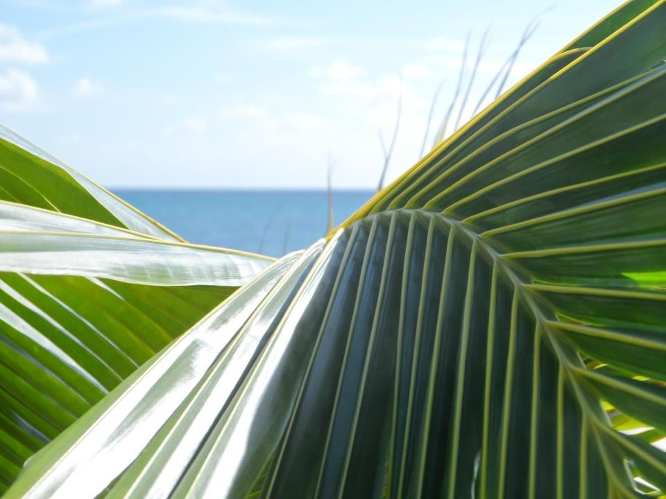
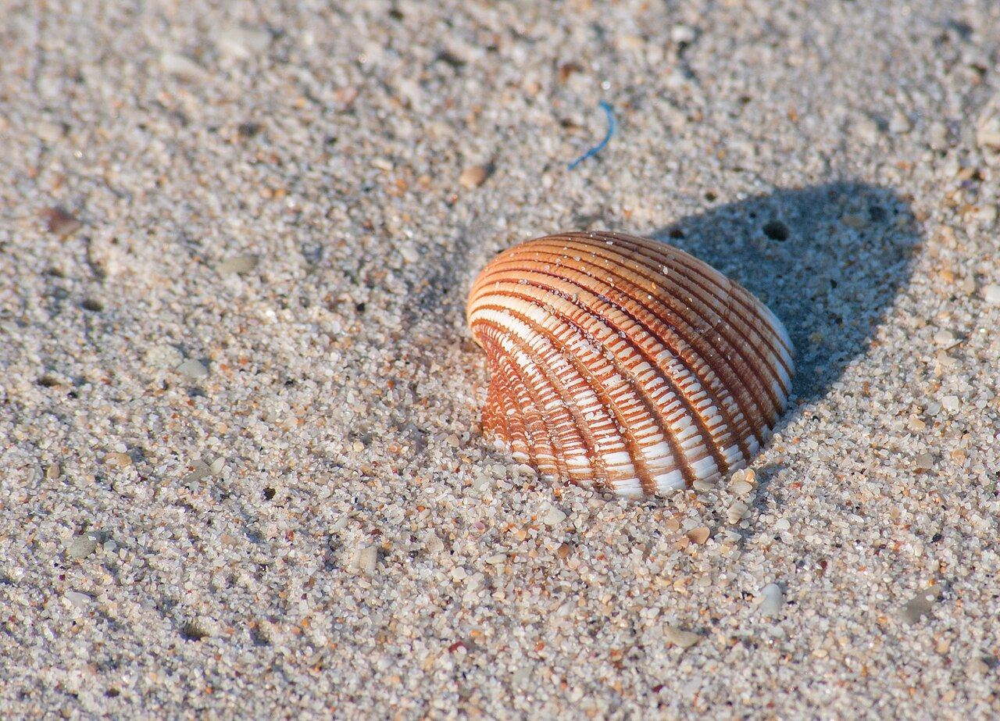
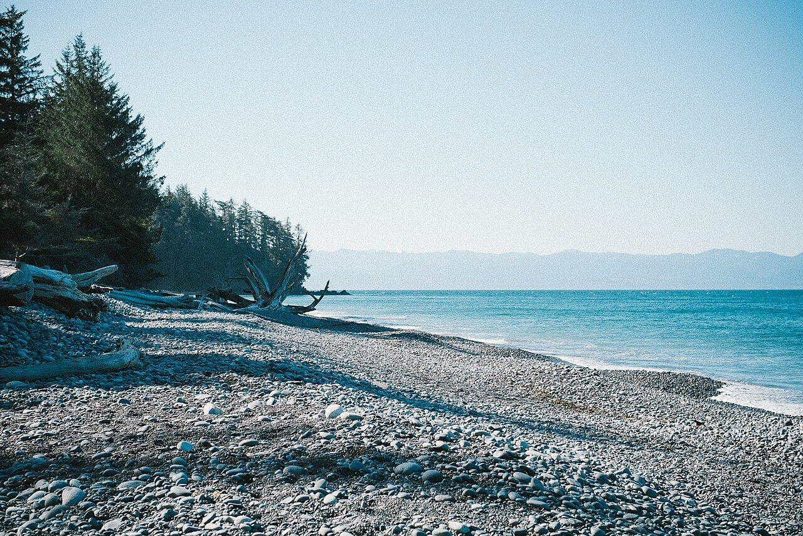
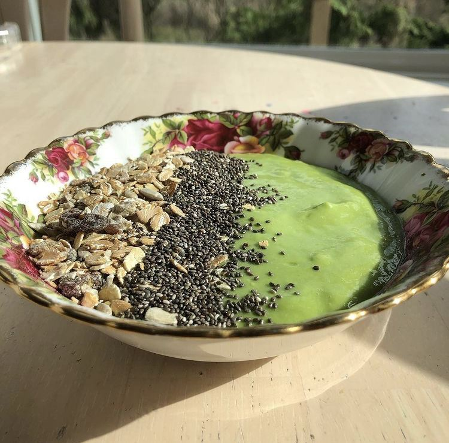

light schedule
光の時間割
一日の光の移ろいに、カフェで過ごす時間を重ねてみました。（雰囲気の表現であり、営業時間の案内ではありません）

AM / 朝の光
朝の光と、湯気のたつ一杯。
差し込む光の中で、ゆっくり目を覚ますコーヒー。波乗りの前後に、深呼吸するような時間をイメージしています。

NOON / 昼の潮風
昼は、潮風に似合うひと皿とグラスを。
冷たいドリンクや軽やかな食事で、体をほっとほどく時間。友人との待ち合わせにも、ひとりの休憩にも。

PM / 夕方の色
夕方の空の色を、思い出に。
海の色が少しずつ変わっていく頃。一日を締めくくる前の、静かなひと息を。
scenes
海辺の空気




お店の基本情報
| 住所 | 〒880-0806 宮崎県宮崎市広島2丁目5-27 第2小田ビル 102 Googleマップで開く |
|---|---|
| 電話 | 070-9359-4840 |
| 営業時間 | 【ご提供情報に差し替え】 |
| 定休日 | 【ご提供情報に差し替え】 |
| 席数 | 【ご提供情報に差し替え】 |
| 駐車場 | 【ご提供情報に差し替え】 |
お客様の声
イメージ例
もっと見る
「波乗りのあとに立ち寄って、温かい飲み物でほっとできました。ゆったりした空気がうれしかったです。」
当サイト制作にあたり、イメージとして作成したサンプルです。実際のお客様の声ではありません。
潮が満ちる前に、会いに来てください。
ご来店前のご確認は、お電話かInstagramで。場所はGoogleマップからどうぞ。